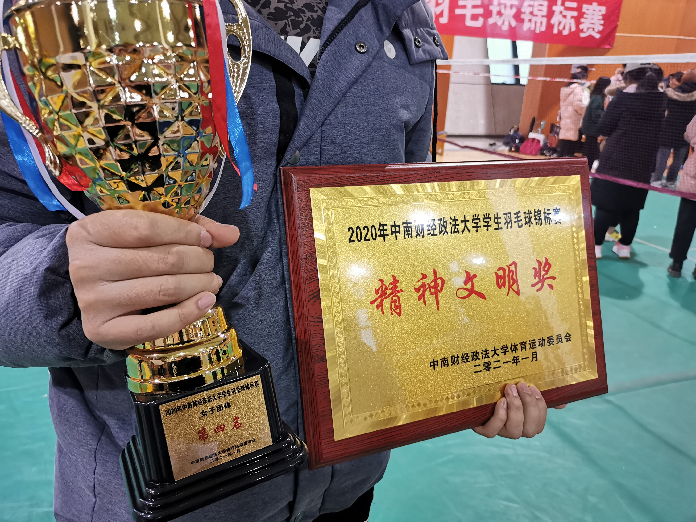

我平时兴趣爱好广泛，参加过各种各样的课余活动，曾在学院第十二次学生代表大会上演讲并成功竞选院学生会主席团。 还曾在学院的送毕晚会上讲相声，我也很喜欢摄影，平时总会同朋友们一同外出摄影。最让我自豪的应该属于羽毛球这个爱好， 在练好个人技能的同时，我还作为队长带领学院女子团体赢得2020年度羽毛球校赛团体第四名的好成绩，并为学院取得了体育道德风尚奖。



我平时兴趣爱好广泛，参加过各种各样的课余活动，曾在学院第十二次学生代表大会上演讲并成功竞选院学生会主席团。 还曾在学院的送毕晚会上讲相声，我也很喜欢摄影，平时总会同朋友们一同外出摄影。最让我自豪的应该属于羽毛球这个爱好， 在练好个人技能的同时，我还作为队长带领学院女子团体赢得2020年度羽毛球校赛团体第四名的好成绩，并为学院取得了体育道德风尚奖。
我的兴趣还包括组织一些活动，大学期间组织了许许多多的活动，如院第十一次学生代表大会、第十届工程之星颁奖晚会等等。 这些活动的成功举办都让我感受到了一种愉悦的满足感。这些活动虽然让我失去了很多个人时间，但这个过程让我得到了许多意想不到的收获。 举办活动也让我一次次的锻炼了自己的能力，让我有了更多的经验。